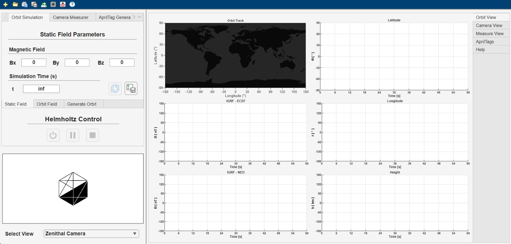
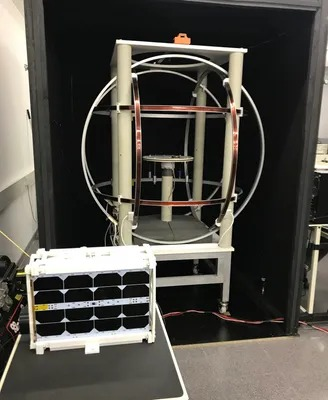

Overview
A unified MATLAB application built for the NanoSat Lab three-axis Helmholtz coil Testbed. It integrates hardware control, orbit simulation, attitude measurement and data logging into a single interface, replacing a fragmented workflow of independent scripts and manual coordination between subsystems.
The goal is to let a researcher select an orbital scenario, run the experiment and export the results without switching between tools.
Context
The Testbed
A three-axis Helmholtz coil system can generate a controlled, near-uniform magnetic field at its centre by driving independent current through three pairs of orthogonal coils. The NanoSat Lab Testbed places a satellite mockup at that centre and exposes it to any target field vector, including time-varying ones that follow a real orbital profile. A BK Precision power supply drives the coils and an microcontroller relay board switches current polarity to cover all field directions.

(Credits: Nanoavionics)
What I built
Camera-based attitude measurement
I built a computer-vision module that uses a USB camera to track AprilTag markers attached to the satellite mockup and estimate its angular position and rate throughout the experiment. This provides an independent, optical measurement channel that complements any onboard ADCS sensors.
Orbit simulation and field control
I modernised, optimised and integrated the existing simulation and hardware-control codebase into the application. This covered the SGP4 orbit propagator and IGRF magnetic field model, as well as the coil current control routines that translate the computed field vector into the correct current commands for each coil axis. The result is a unified, real-time pipeline that replaces a set of standalone scripts with a single interface handling both simulation and hardware in lockstep. A static mode is also available for single-point calibration tests where a fixed, known field is needed.
Highlights
- Centralised control of the full experiment: hardware, simulation, measurement and logging from one interface.
- Real-time coil current control following SGP4 + IGRF orbital field profiles.
- Static and orbital simulation modes for calibration and full mission-profile tests.
- Optical attitude estimation via AprilTag detection and Kalman filtering from two camera views.
- Session save and reload for reproducible experiments and offline analysis.